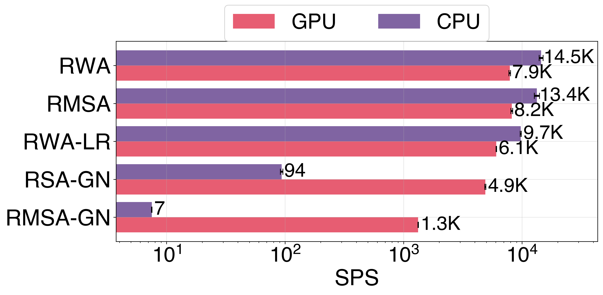
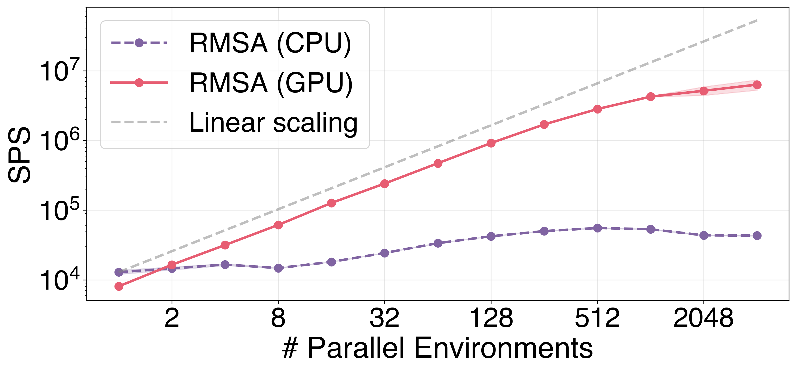
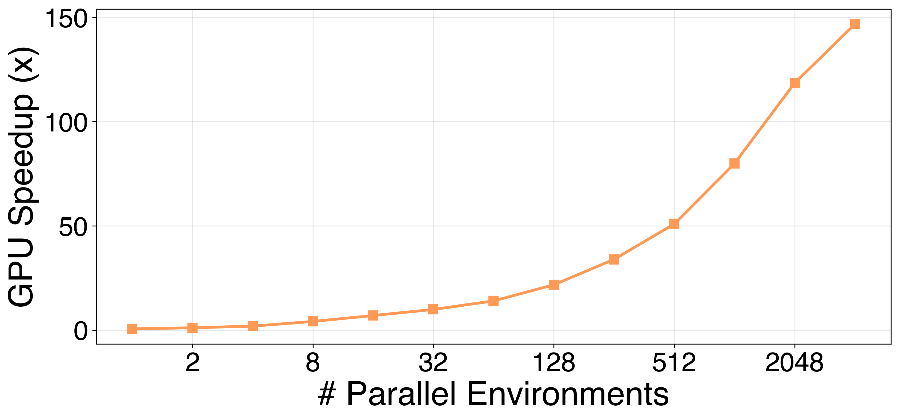
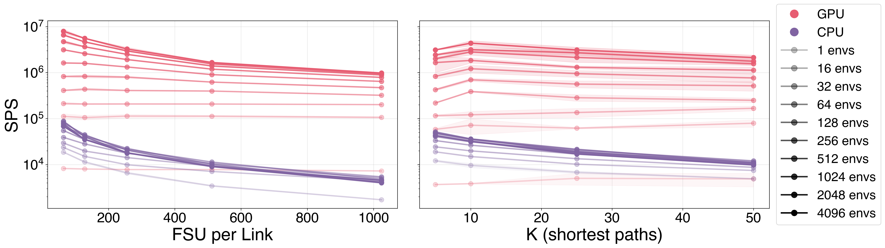
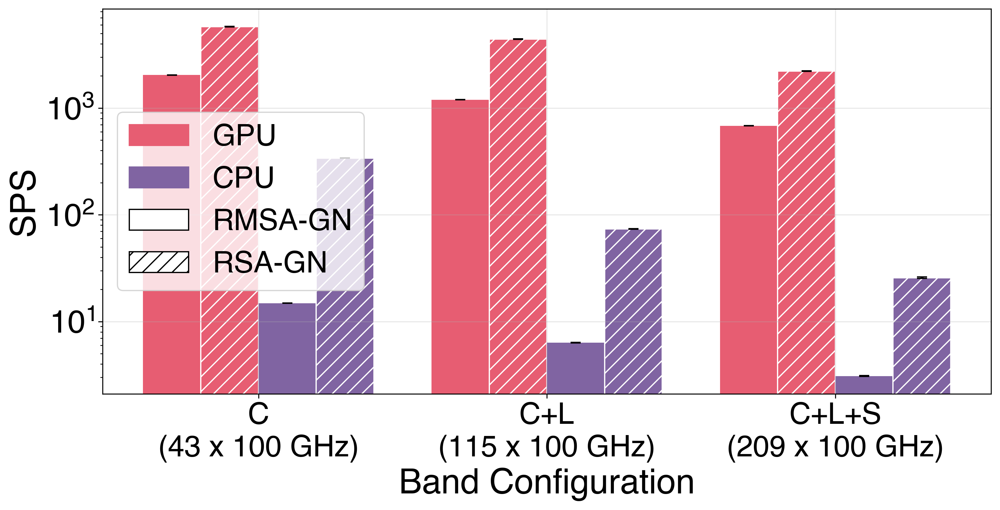
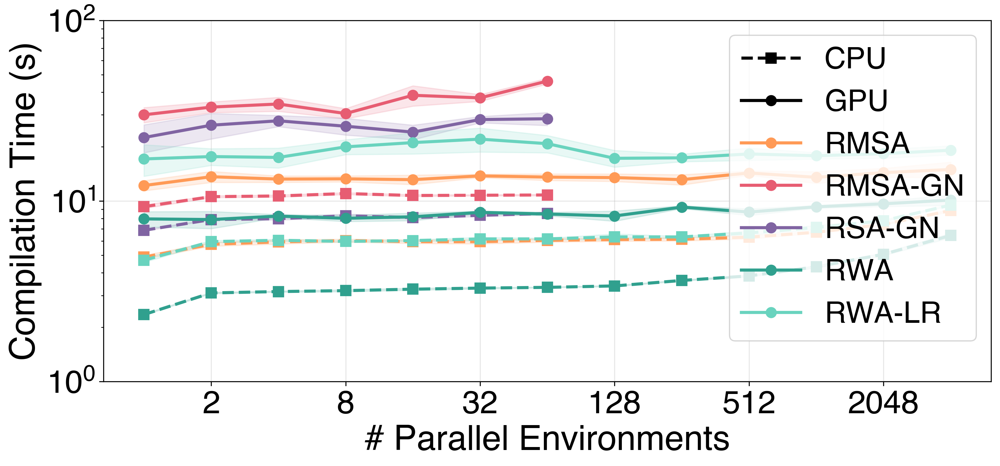
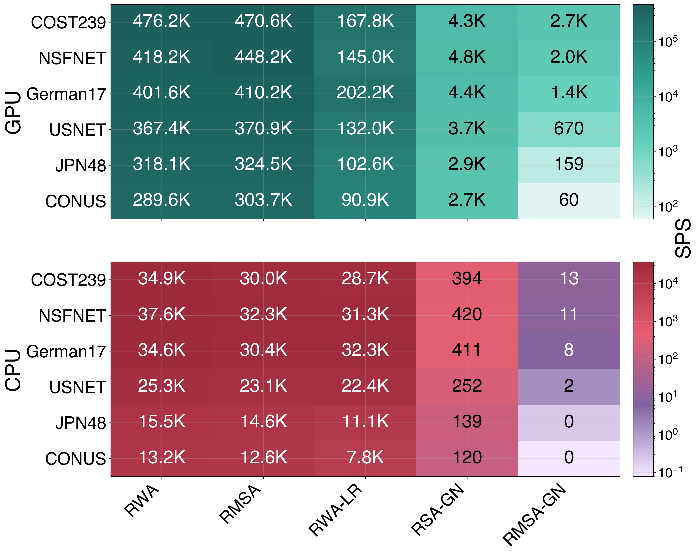
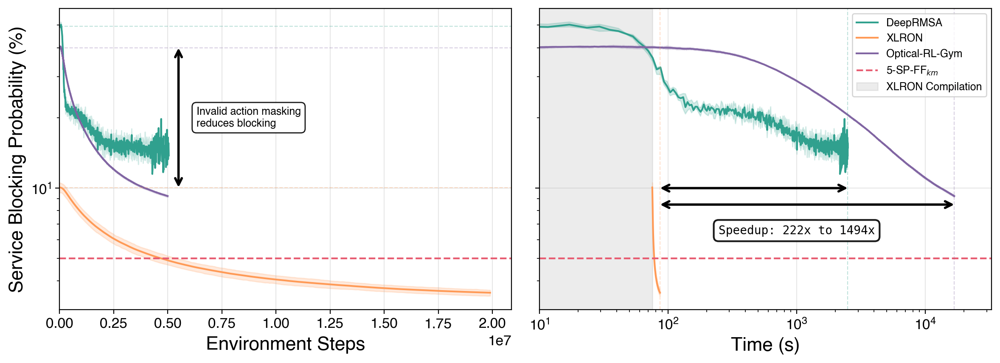

Comparisons & Speed
XLRON is the most comprehensive open-source optical-network simulation library, and the fastest by a wide margin once GPU parallelism is engaged. The headline numbers from the forthcoming XLRON framework paper (in preparation; see Papers):
- 6 × 10⁶ steps/s for RMSA on a single A100 with 2,048 parallel envs.
- 300× higher single-device throughput than Flex Net Sim (the fastest single-core CPU library) once GPU parallelism is used.
- 222–1,494× wall-clock speedup over DeepRMSA / Optical-RL-Gym for end-to-end RL training on the canonical DeepRMSA benchmark, while also achieving lower blocking via invalid action masking.
See the XLRON framework paper reproduction guide for the exact commands.
Feature comparison with other libraries
| Feature | XLRON | GNPy | DeepRMSA | RSA-RL | ORL-Gym | ON-Gym | FUSION | Flex Net Sim |
|---|---|---|---|---|---|---|---|---|
| GUI | ✓ | ✓ | ✗ | ✗ | ✗ | ✗ | ✓ | ✗ |
| RL training | ✓ | ✗ | ✓ | ✓ | ✓ | ✓ | ✓ | Ext. |
| Invalid action masking | ✓ | ✗ | ✗ | ✓ | ✗ | ✗ | ✗ | ✗ |
| Physical layer model | EGN | GN | ✗ | ✗ | ✗ | GN | Partial | ✗ |
| ISRS | ✓ | Partial | ✗ | ✗ | ✗ | ✗ | ✗ | ✗ |
| Distributed Raman | ✓ | ✓ | ✗ | ✗ | ✗ | ✗ | ✗ | ✗ |
| Nyquist subchannels | ✓ | ✗ | ✗ | ✗ | ✗ | ✗ | ✗ | ✗ |
| Multi-band | ✓ | Partial | ✗ | ✗ | ✗ | ✓ | Partial | Ext. |
| Differentiable simulation | ✓ | ✗ | ✗ | ✗ | ✗ | ✗ | ✗ | ✗ |
| Hardware acceleration | GPU | ✗ | ✗ | ✗ | ✗ | ✗ | ✗ | ✗ |
| LLM-agent support | ✓ | ✗ | ✗ | ✗ | ✗ | ✗ | ✓ | ✗ |
Cross-library throughput
Throughput in steps per second (SPS) for dynamic spectrum allocation on the 14-node NSFNET topology, 100 FSU per link, KSP-FF (k=5), distance-adaptive modulation. "inc. GN" / "exc. GN" denote whether a physical-layer model is enabled.
| Library | Hardware | exc. GN | inc. GN |
|---|---|---|---|
| FUSION | CPU 1 core | 100 | — |
| ON-Gym | CPU 1 core | \(2.7 \times 10^{1}\) | \(1.3 \times 10^{2}\) |
| Flex Net Sim | CPU 1 core | \(2.0 \times 10^{4}\) | — |
| GNPy | CPU 1 core | — | \(3.5 \times 10^{1}\) |
| XLRON | CPU 1 core | \(1.5 \times 10^{4}\) | \(9.4 \times 10^{1}\) |
| XLRON | GPU, 1 env | \(8.0 \times 10^{3}\) | \(1.3 \times 10^{3}\) |
| XLRON | GPU, 2,048 envs | \(\mathbf{6.0 \times 10^{6}}\) | — |
FUSION / ON-Gym / Flex Net Sim figures reproduced from Bórquez-Paredes et al. 2026.
Throughput scaling
Throughput across XLRON's environment types (RWA, RMSA, RWA-LR, RSA-GN, RMSA-GN) on a single GPU vs CPU, with no parallelism:

Scaling with the number of parallel environments — near-linear on GPU, plateau on CPU around the core count:

GPU speedup over CPU as a function of parallel environments. Crossover at 2 envs, 150× speedup at 4,096 envs:

Sensitivity to FSU per link and number of candidate paths \(k\) — XLRON degrades gracefully on GPU even up to 1,000 FSU and \(k=50\):

GN-model environments scaling across band configurations (C, C+L, C+L+S):

JIT compilation cost — a one-time 3–50 s, amortised over the run:

Topology × env-type heatmap (six topologies, five environments, GPU vs CPU):

End-to-end RL training: DeepRMSA reproduction
XLRON, the original DeepRMSA codebase, and Optical-RL-Gym all trained on the canonical DeepRMSA setup (NSFNET, 100 FSU, k=5, 2 × 10⁷ env steps). XLRON achieves lower blocking and finishes 222–1,494× sooner:

The shaded region indicates XLRON's one-time JIT compilation overhead. Invalid action masking (the dashed annotation) is what drives the lower-blocking advantage; GPU + JIT is what drives the wall-clock advantage.
Reproduce all of the above with the commands in the XLRON framework paper reproduction guide.